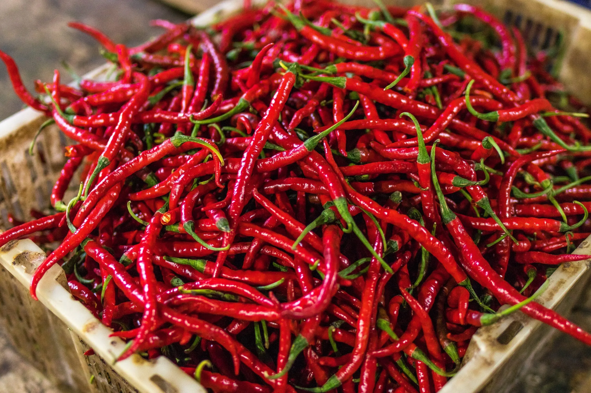

Carolina Reaper Chilli Flakes - The Hot Pepper Company
Condition :New
Quantity: 1
Price :
$4.99 - $259.99
Pickup:
Free local pickup from MORAWAKA, SRI LANKA. | See details
Shipping:
FREE Economy Shipping | See details for shipping
International shipment of items may be subject to customs processing and additional charges.
International shipment of items may be subject to customs processing and additional charges.
Located in: MORAWAKA, SRI LANKA.
Delivery:
Estimated between 11-23 Business days.
Please allow additional time if international delivery is subject to customs processing.
Returns:30 Day returns | Buyer pays for return shipping | See details- for more information about returnsPayments: